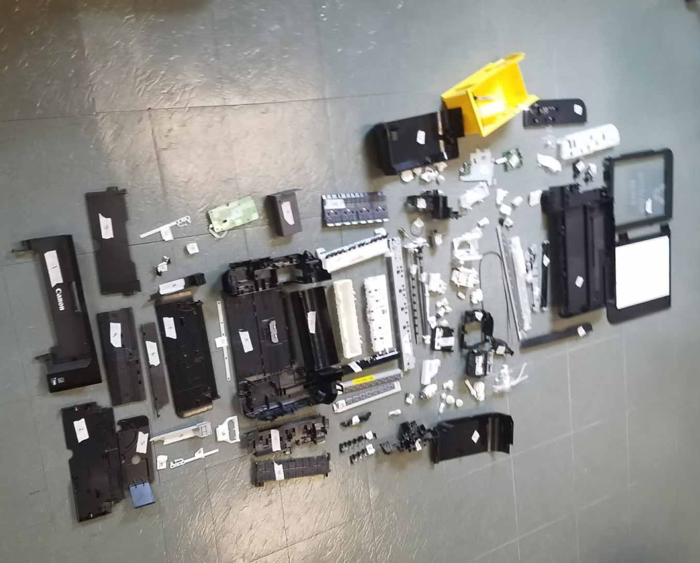
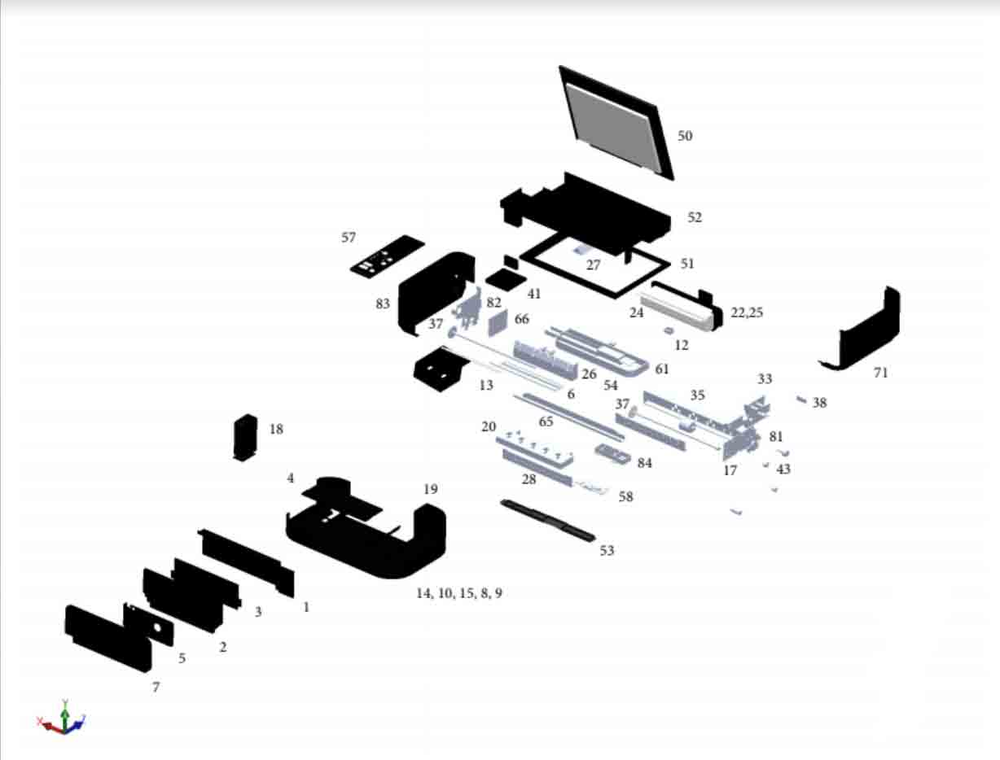

PIXMA Printer Teardown
A Solidworks Adventure

Challenge
Receiving only 3.5 stars on Amazon, more bad reviews than good, and costing only $34.99, the Canon PIXMA MG3620 printed sounded like the perfect machine to destroy and then model for my group's teardown assignment. As part of the ME01: Product Design course my group had to take apart an entire printer and model it in Solidworks. As a group, we took apart the printer and created an assembly of the printer once all the individual pieces were modeled. I was personally responsible for modeling about 30 of the interior pieces and two of the external pieces.
The Teardown
Initially, we planned on putting the printer back together after dissassembling and took copious photos and notes about the placement of screws. I ended up making a powerpoint presentation with over a 100 slides that sequenced all the images taken during the tear down to show where all the parts went.
While we quickly abandoned the goal of reassmebling the printer after the first hour of taking the printer about came and went, the detailed pictures were a lifesaver when it came to assembling the printer again in Solidworks. Below lies all the pieces of the printer on the shop floor:
Bill of Materials
In order to properly model all of these pieces in SolidWorks, they were named and measured. Our Bill of Materials listed each of these pieces with their corresponding dimensions but we didn’t go further than that to determine what individual parts were made of or where they were manufactured. In total, we had over 200 loose pieces but we ended up grouping similar bolts, screws and connectors together. Slightly more than 80 pieces were modeled in Solidworks.
CAD Model
The fully assembled model is shown at the top of this page but the image below shows the exploded view of the printer. The number on the images correspond to the Bill of Materials, which is not included here.
